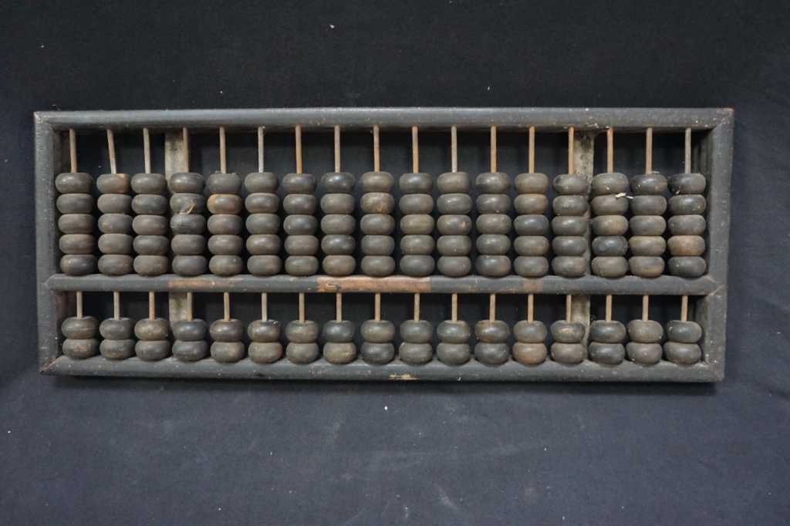

SEJARAH, PERKEMBANGAN DAN KRITIK TENTANG TEKNOLOGI MAJU
1. Sejarah Awal Komputer
Awal mula evolusi komputer dimulai dengan keinginan manusia untuk memahami dan memanipulasi lingkungan sekitarnya. Manusia paling awal menggunakan jari mereka untuk menghitung dan bertindak pada benda-benda material. Metode sederhana seperti ini berkembang menjadi perangkat proxy seperti sempoa dan tablet lilin yang memungkinkan penyimpanan informasi. Abacus atau sempoa adalah alat bantu perhitungan yang kemudian menjadi cikal bakal komputer. Abacus mulai menghilang dan jarang digunakan lagi sejak kemunculan alat tulis seperti kertas dan pensil. Penemuan mesin komputer lainnya muncul pada sekitar 12 abad kemudian, yaitu kalkulator roda numerik yang dinamakan pascaline yang ditemukan oleh Blaise Pascal. Kemudian, kalkulator ini diperbaharui oleh Gottfred Wilhem von Leibniz dengan penemuannya pada tahun 1694. Charles Xavier Thomas de Colmar juga membuat kalkulator mekanik fungsi aritmatik dasar yang kemudian digunakan dalam perang dunia ke-1 karena dapat membantu dalam melakukan kalkulasi.

Sempoa

Roda Numerik

Kalkulator mekanik
2. Sejarah Perkembangan Komputer
Perkembangan komputer sejak masa Blaise Pascal (1623-1662) dimana Pascal mengembangkan kinerja komputer dari pendahulunya dengan penemuannya yang membawa 8 jumlah bilangan. Berkut prinsip kalkulator yang dibuat Pascal pada roda gigi pertama yang bergergi 10, saat roda gerigi melakukan satu putaran (10), maka roda bergerigi yang kedua akan bergerak dan satu gigi akan bergeser dan gergi pada roda akan berotasi hingga 10 kali (100) yang akan menggerakan roda gigi yang lainnya hingga mencapai 1000. Selanjutnya, seorang profesor matematika asal Inggris yaitu Charles Babbage atau Bapak Komputer, mengembangkan gagasan komputer yang dapat diprogram. Charles Babbage menemukan mesin baru sebagai bukti dari gagasannya tersebut, namun mesin tersebut tidak berhasil diselesaikan oleh Babbage dan kini dimuseumkan di Inggris. Perkembangan komputer dimulai pada abad ke-19 ketika Gottfred Wilhelm von Leibniz menciptakan kalkulator mekanik yang dapat melakukan empat operasi aritmatika dasar. Pada tahun 1860, Herman Hollerith menciptakan mesin tabulator yang menggunakan punched card untuk memproses data statistik dengan cepat. Ide ini menjadi dasar bagi komputer modern karena punched card dapat diurutkan dan dijumlahkan dengan mesin. Howard H. Aiken menciptakan kalkulator elektronik dengan memanfaatkan signal elektromagnetik, dan ini diikuti oleh munculnya Electronic Numerical Integrator and Computer (ENIAC) yang dibuat oleh John W. John Presper Eckert. Pada tahun 1940-an, John William Mauchly menciptakan Electronic Discrete Variable Automatic Computer (EDVAC) yang bisa menyimpan data dan program ke dalam memori, yang merupakan awal mula pembuatan CPU yang diperkirakan muncul sejak masa tersebut.